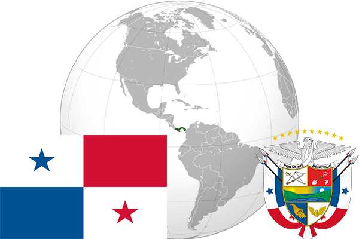

To`liq nomi: Panama Respublikasi
Region: Markaziy Amerika
Qonunchilik shakli: Respublika
Mustaqillik kuni: 3 noyabr 1903 (Kolumbiyadan)
Poytaxt: Panama
Maydoni: 78,200 km²
Chegaradosh davlatlari: Kosta-Rika, Kolumbiya.
Aholisi: 3 689 293 (2013-yil)
Aholi zichligi: 44,5 /км²
Aholining o`rtacha yoshi: 77,77 yil (2015-yil)
Rasmiy tili: Ispan tili
Dini: Xristian
Pul birligi: AQSh Dollar
Telefon prefiksi: +507
Internet domen: .pa
Xalqaro tashkilotlarga a`zoligi: BMT
Dengiz va okeanlarga chiqishi: Karib dengizi, Tinch okeani
YIM: Butun: $63.68 mlrd. (2017-yil) Jon boshiga: $15,313
Yirik shaharlari: Panama, San Miguelito, Las Cumbres.